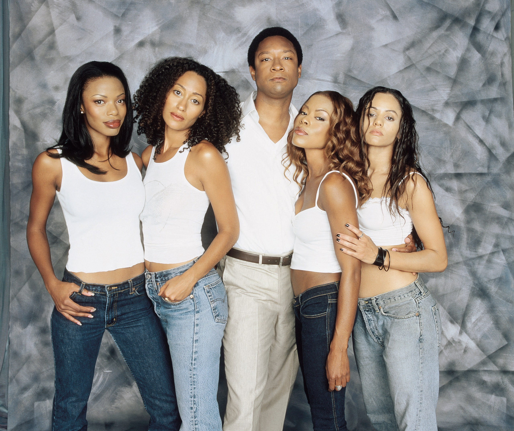

Fashion Village Designs
The Best of 2021 Spring
The Best Behind-the-Scenes Photos From Paris Fashion Week Spring 2021.
RUNWAY
Today, Levi’s is making it a little easier with the launch of Levi’s Secondhand, a recommerce site for previously worn Levi’s jeans and denim jackets.
RUNWAY
Paris Fashion Week has the last spot on the big-four fashion calendar and, with that, has the honor of being the culmination of what is usually weeks of spectacular runway shows.
FASHION
Few designers have mastered the art of optimistic knits like Victor Glemaud. The often clingy, often colorful designs immediately brighten your day—the sartorial equivalent of endorphins.
FASHION
Masks are not a fashion accessory, but they do take up a fair amount of real estate on your face, so it’s not surprising that people are looking for aesthetically pleasing ones.

MaraBrock Akil’s Girlfriends show is finally on Netflix.
That means I don’t have to search the ends of the internet to stream my favorite series—it also means endless hair and beauty inspiration. Joan’s hard work, Lynn’s artistic open-mindedness, Maya’s unapologetic spirit, and Toni’s confidence and honesty motivated me through middle school.
The show’s fashion and beauty looks were my mood board, from curls, blowouts, and weaves to wigs, braids, and updos. Inspiration didn’t stop at the hair either.I remember my mom watching Girlfriends in the early 2000s, when I’d secretly enjoy joining her on the couch each week to see how Joan, Maya, Toni, Lynn, and Williams’s shenanigans would unfold. I didn’t always know what was going on (the show started when I was five and ended when I was in the eighth grade), but I was always entertained, and I looked up to each of the characters for different reasons. Joan’s hard work, Lynn’s artistic open-mindedness, Maya’s unapologetic spirit, and Toni’s confidence and honesty motivated me through middle school. The show’s fashion and beauty looks were my mood board, from curls, blowouts, and weaves to wigs, braids, and updos. Inspiration didn’t stop at the hair either.
There was Joan’s lit-from-within glow, Lynn’s au natural meets gothic-chic vibe, Maya’s hot pink lips and smoky eyes, and Toni’s sexy red lips. It was all a glimpse of what I thought my adult life could look and feel like.